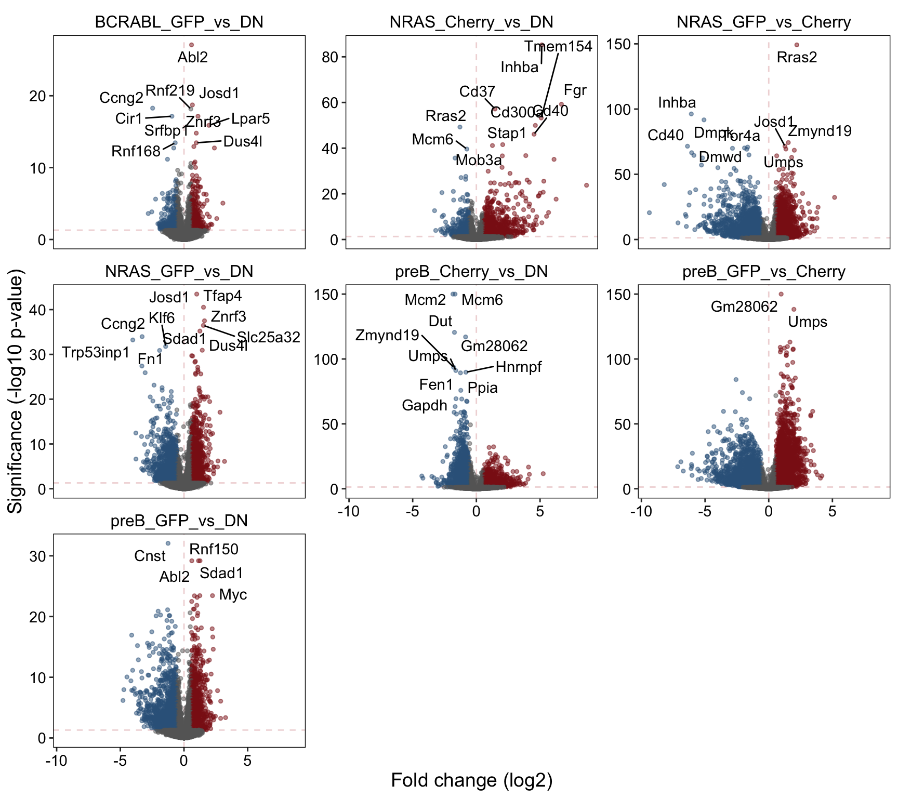
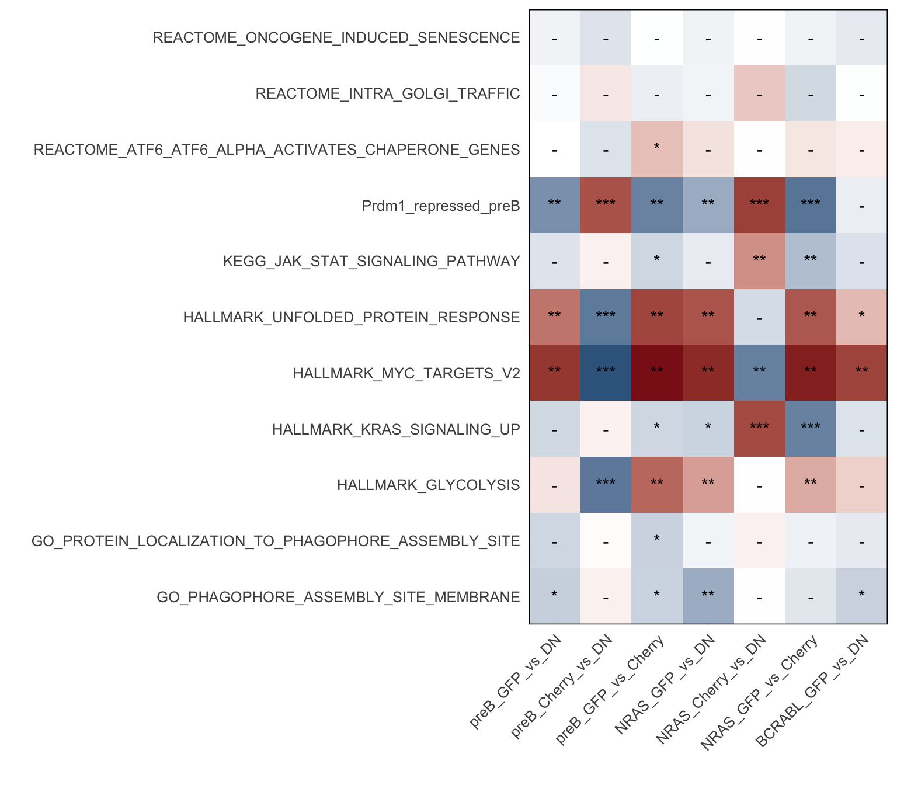
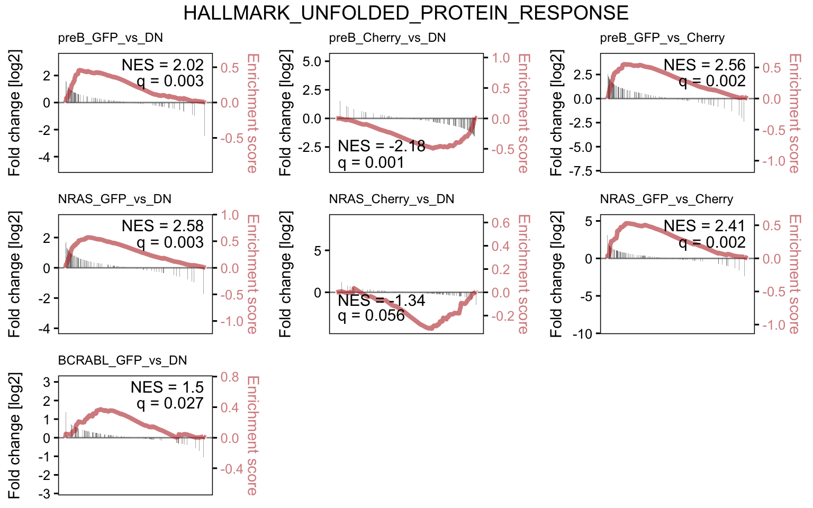

Section2 BCL6/MYC Dual Reporter DE
2.1 Background
To characterise the transcriptional programs driven by MYC and BCL6 in B-cells, a dual reporter system was established with GFP-Myc and mCherry-BCL6 in normal mouse pre-B cultured in Il7, and pre-B trasnformed by either BCR-ABL1 or NRAS G12D.
Note: no mCherry+ population is observed in the BCR-ABL1 condition due to BA driving Myc program & thereby repressing Bcl6.
2.2 Setup
2.3 Sample Info
files <- list.files("../processed_data/RNAseq/BCL6_MYC_salmon", pattern = "quant.sf",
recursive = T, full.names = T)
pattern <- "^.+/XLR[0-9]+_(([A-Za-z]+)_([A-Za-z]+)_(rep[0-9]+))/quant.sf$"
smi <- data.frame(sample_id = sub(pattern, "\\1",files),
condition = sub(pattern, "\\2_\\3",files),
replicate = sub(pattern, "\\4",files),
path = files)
names(files) <- smi$sample_id
smi %>% arrange(sample_id) %>%
DT::datatable(escape = F, rownames = F,
colnames = c("Sample ID", "Condition", "Replicate", "File Path"),
options = list(
scrollX = TRUE,
columnDefs = list(list(
targets = 3,
render = JS(
"function(data, type, row, meta) {",
"return type === 'display' && data.length > 35 ?",
"'<span title=\"' + data + '\">' + data.substr(0, 35) + '...</span>' : data;",
"}")))
), callback = JS('table.page(3).draw(false);'))2.4 Load and preprocess counts
2.5 Differential Expression
contrasts <- list(preB_GFP_vs_DN = "preB_GFPpos_vs_preB_DN",
preB_Cherry_vs_DN = "preB_Cherrypos_vs_preB_DN",
preB_GFP_vs_Cherry = "preB_GFPpos_vs_preB_Cherrypos",
NRAS_GFP_vs_DN = "Nras_GFPpos_vs_Nras_DN",
NRAS_Cherry_vs_DN = "Nras_Cherrypos_vs_Nras_DN",
NRAS_GFP_vs_Cherry = "Nras_GFPpos_vs_Nras_Cherrypos",
BCRABL_GFP_vs_DN = "BA_GFPpos_vs_BA_DN")
deres <- lapply(contrasts, function(contrast) {
a <- sub("^(.+)_vs_(.+)$", "\\1", contrast)
b <- sub("^(.+)_vs_(.+)$", "\\2", contrast)
res <- results(dds, contrast=c("condition", a, b))
lfcShrink(dds, contrast = c("condition", a, b),
res = res, type = "normal")
})2.6 Annotate and tidy
rlog <- rlog(dds)
genesymb <- mapIds(txdb, keys = rownames(deres[[1]]),
keytype = "GENEID", column = "SYMBOL")
wb <- createWorkbook()
deanno <- lapply(names(contrasts), function(contrast) {
resdf <- as.data.frame(deres[[contrast]])
a <- sub("^(.+)_vs_(.+)$", "\\1", contrasts[[contrast]])
b <- sub("^(.+)_vs_(.+)$", "\\2", contrasts[[contrast]])
resdf <- cbind(resdf, assay(rlog)[, c(grep(b, colnames(rlog)),
grep(a, colnames(rlog)))])
resdf$gene_symbol <- genesymb
resdf$ensembl_id <- rownames(resdf)
resdf$baseMean <- log2(resdf$baseMean)
resdf[,paste0("av_", b)] <- rowMeans(assay(rlog)[, grep(b, colnames(rlog))])
resdf[,paste0("av_", a)] <- rowMeans(assay(rlog)[, grep(a, colnames(rlog))])
resdf <- resdf[order(resdf$pvalue), c(13:14,2,6,3,1,15:16,7:12)]
colnames(resdf)[3:6] <- c("L2FC","qval","L2FC_SE","av_expr")
addWorksheet(wb, sheetName = contrast)
writeData(wb, resdf, sheet = contrast, rowNames = F)
freezePane(wb, sheet = contrast, firstRow = TRUE, firstCol = TRUE)
return(resdf)
})
names(deanno) <- names(contrasts)
saveWorkbook(wb, "../results/BCL6_MYC_DE.2020-03-11.xlsx", overwrite = T)
saveRDS(deanno, "../processed_data/RNAseq/BCL6_MYC_DE.2020-03-11.rds")dds <- readRDS("../processed_data/RNAseq/BCL6_MYC_dds.2020-03-11.rds")
deanno <- readRDS("../processed_data/RNAseq/BCL6_MYC_DE.2020-03-11.rds")
lapply(names(deanno), function(x) {
y <- as.data.frame(deanno[[x]]) %>% dplyr::filter(qval < 0.05)
data.frame(condition = x,
upreg = y %>% dplyr::filter(L2FC > 1) %>% nrow(),
dnreg = y %>% dplyr::filter(L2FC < -1) %>% nrow())
}) %>% bind_rows() %>% kableExtra::kable()| condition | upreg | dnreg |
|---|---|---|
| preB_GFP_vs_DN | 324 | 870 |
| preB_Cherry_vs_DN | 994 | 812 |
| preB_GFP_vs_Cherry | 1571 | 2250 |
| NRAS_GFP_vs_DN | 392 | 849 |
| NRAS_Cherry_vs_DN | 593 | 201 |
| NRAS_GFP_vs_Cherry | 964 | 1809 |
| BCRABL_GFP_vs_DN | 94 | 116 |
2.7 Volano plot
goi <- c("Egr1", "Dusp6", "Cish", "Hk1", "Hk2")
plotdat <- lapply(names(deanno), function(comp) {
x <- deanno[[comp]]
x$col <- "B"
x[which(x$qval < 0.05 & x$L2FC > 0.58),]$col <- "A"
x[which(x$qval < 0.05 & x$L2FC < -0.58),]$col <- "C"
if (any(x$qval < 1e-150, na.rm = T)) x[which(x$qval<1e-150),]$qval <- 1e-150
topg <- top_n(x, 10, -qval)$gene_symbol
x$label <- ifelse(x$gene_symbol %in% c(topg, goi) & x$qval < 1e-03,
x$gene_symbol, "")
x$comparison <- comp
return(x[,c(1:6,15:17)])
}) %>% bind_rows()
(p <- ggplot(plotdat, aes(x = L2FC, y = -log10(qval))) +
geom_hline(yintercept = -log10(0.05), color = "firebrick", alpha = .2, lty=2) +
geom_vline(xintercept = 0, color = "firebrick", alpha = .2, lty=2) +
geom_point(aes(col=col), alpha = .5, size=1) +
ggrepel::geom_text_repel(aes(label = label)) +
facet_wrap(~comparison, nrow = 3, scales = "free_y") +
scale_color_manual(values = c("firebrick4","grey40","steelblue4")) +
scale_x_continuous(name = "Fold change (log2)") +
scale_y_continuous(name = "Significance (-log10 p-value)") +
theme(text = element_text(size = 14, color = "black", family = "Arial"),
axis.text = element_text(size = 11, color = "black", family = "Arial"),
panel.grid = element_blank(),
panel.background = element_blank(),
panel.border = element_rect(color = "black", fill = NA),
strip.background = element_blank(),
strip.text = element_text(size = 12, color = "black", family = "Arial"),
legend.position = "none"))
2.8 Full GSEA
Note: This analysis was run on all REACTOME, KEGG, MSigDB Hallmark, and WIKIPATHWAY database gene sets (with some minor filtering for irrelevant sets). This is useful for data exploration but will inflate q-value/padj simply due to the large number of tests performed, hence these results should be used to identify potentially interesting pathways before performing more selective enrichment testing for more appropriate statistical values.
library(msigdbr)
library(fgsea)
msig <- rbind(msigdbr(species = "Mus musculus", category = "H"),
msigdbr(species = "Mus musculus", category = "C2", subcategory = "CP:REACTOME"),
msigdbr(species = "Mus musculus", category = "C2", subcategory = "CP:KEGG"),
msigdbr(species = "Mus musculus", category = "C5"))
gs <- split(msig$gene_symbol, msig$gs_name)
internal_gs <- readRDS("../../resources/public_genesets_Mm.rds")
gs <- c(gs, internal_gs)
gs <- gs[!grepl(paste0("sperm|xeno|graft|naba|spinal|neuro|sclerosis",
"|tion_of_hscs|photo|leish|diabetes|lupus|ebola",
"|staph|syndrome|myo|nicotin|asthma|thyroid_stim",
"|gastrin|alcohol|nutrient|carcinoma|muscle_contr",
"|metapathway|amyloid|fusion_mutants|circadian"),
names(gs), ignore.case = T)]
gl <- lapply(deanno, function(x) {
tmp <- x$L2FC
names(tmp) <- x$gene_symbol
tmp <- tmp[!is.na(names(tmp)) & names(tmp) != "" & !is.na(tmp) & is.finite(tmp)]
tmp <- tmp[order(-tmp)]
tmp[!duplicated(names(tmp))]
})
gseres <- lapply(gl, function(x) {
fgseaSimple(pathways = gs, stats = x,
nperm = 1000, minSize = 10, maxSize = 500) %>%
dplyr::filter(lengths(leadingEdge) > 3) %>%
arrange(pval)
})
wb <- createWorkbook()
lapply(names(gseres), function(contrast) {
gse <- as.data.frame(gseres[[contrast]])
addWorksheet(wb, sheetName = contrast)
writeData(wb, gse, sheet = contrast, rowNames = F)
freezePane(wb, sheet = contrast, firstRow = TRUE, firstCol = TRUE)
return(NULL)
})## [[1]]
## NULL
##
## [[2]]
## NULL
##
## [[3]]
## NULL
##
## [[4]]
## NULL
##
## [[5]]
## NULL
##
## [[6]]
## NULL
##
## [[7]]
## NULLsaveWorkbook(wb, "../results/BCL6_MYC_DE_fullGSEA.2020-03-11.xlsx", overwrite = T)
lapply(names(gseres), function(x) {
tmp <- gseres[[x]] %>% dplyr::filter(pval < 0.1) %>% dplyr::select(pathway, NES)
tmp[,2] <- round(tmp[,2], 3)
colnames(tmp)[2] <- x
return(tmp) }) %>%
Reduce(f = function(x,y) { merge(x, y, by="pathway") }) %>%
arrange(-apply(., 1, var)) %>%
mutate(pathway = ifelse(pathway %in% names(internal_gs), pathway,
paste0('<a href=https://www.gsea-msigdb.org/gsea/msigdb/cards/',
pathway, '.html>', substr(pathway, 0,30), '</a>'))) %>%
DT::datatable(escape = F, rownames = F,
options = list(
scrollX = TRUE))2.9 Select GSEA
poi <- c("KEGG_JAK_STAT_SIGNALING_PATHWAY",
"HALLMARK_MYC_TARGETS_V2",
"HALLMARK_UNFOLDED_PROTEIN_RESPONSE",
"REACTOME_ONCOGENE_INDUCED_SENESCENCE",
"REACTOME_INTRA_GOLGI_TRAFFIC",
"GO_PROTEIN_LOCALIZATION_TO_PHAGOPHORE_ASSEMBLY_SITE",
"GO_PHAGOPHORE_ASSEMBLY_SITE_MEMBRANE",
"REACTOME_ATF6_ATF6_ALPHA_ACTIVATES_CHAPERONE_GENES",
"HALLMARK_GLYCOLYSIS",
"HALLMARK_KRAS_SIGNALING_UP",
"Prdm1_repressed_preB")gsub <- gs[names(gs) %in% poi]
gseres <- lapply(gl, function(x) {
fgseaSimple(pathways = gsub, stats = x,
nperm = 10000, minSize = 10, maxSize = 500) %>%
arrange(pval)
})
saveRDS(gseres, "../processed_data/RNAseq/BCL6_MYC_DE_subGSEA.2020-03-11.rds")
wb <- createWorkbook()
null <- lapply(names(gseres), function(contrast) {
gse <- as.data.frame(gseres[[contrast]])
addWorksheet(wb, sheetName = contrast)
writeData(wb, gse, sheet = contrast, rowNames = F)
freezePane(wb, sheet = contrast, firstRow = TRUE, firstCol = TRUE)
})
saveWorkbook(wb, "../results/BCL6_MYC_DE_subGSEA.2020-03-11.xlsx", overwrite = T)gseres <- readRDS("../processed_data/RNAseq/BCL6_MYC_DE_subGSEA.2020-03-11.rds")
lapply(names(gseres), function(x) {
gseres[[x]] %>%
mutate(pvaltxt = ifelse(padj < 0.001, "***",
ifelse(padj < 0.01, "**",
ifelse(padj < 0.05, "*", "-"))),
cond = x,
score = -log10(padj)*NES) %>%
dplyr::select(pathway, score, pvaltxt, cond) }) %>%
bind_rows() %>%
mutate(cond=factor(cond, levels=unique(cond))) %>%
ggplot(aes(x=cond, y=pathway, fill=score, label=pvaltxt)) +
geom_tile() +
geom_text() +
scale_x_discrete(expand=c(0,0), name="") +
scale_y_discrete(expand=c(0,0), name="") +
scale_fill_gradient2(low="steelblue4", mid="white", high="firebrick4") +
theme_bw(base_size = 12, base_family = "Arial") +
theme(panel.background = element_blank(),
panel.border = element_rect(color="black", fill=NA),
axis.text.x = element_text(angle=45, hjust=1),
axis.ticks = element_blank(),
legend.position = "none")
2.10 GSEA plots
source("../../resources/fsea.R")
library(rvg)
library(officer)
library(cowplot)
ppt <- read_pptx()
pl <- lapply(poi[!grepl("LIPO", poi)], function(path) {
pathplots <- lapply(names(gseres), function(contrast) {
plot_fgsea(gseres[[contrast]], gl[[contrast]], gs, path) +
ggtitle(contrast) +
theme(plot.title = element_text(size=9))
})
title <- ggdraw() + draw_label(path)
combined <- plot_grid(plotlist = pathplots, align = "vh", ncol = 3)
p <- plot_grid(title, combined, ncol = 1, rel_heights = c(0.05, 1))
add_slide(x = ppt, layout = "Title and Content", master = "Office Theme") %>%
ph_with(value = dml(ggobj = p),
location = ph_location(height = 5, width = 9,
left = 0.25, top = 0.5),
bg = "transparent")
return(p)
})
names(pl) <- poi[!grepl("LIPO", poi)]
print(ppt, target="../img/BCL6_MYC_DE_subGSEAplots.2020-03-11.pptx")
pl$HALLMARK_UNFOLDED_PROTEIN_RESPONSE
2.11 Downloads
- Differential expression results (xlsx).
- Full GSEA results for exploratory analysis (xlsx).
- GSEA subset for stats on selected pathways (xlsx).
- GSEA plots (vecotorised pptx).
2.12 Session info
## R version 4.0.4 (2021-02-15)
## Platform: x86_64-apple-darwin17.0 (64-bit)
## Running under: macOS Catalina 10.15.7
##
## Matrix products: default
## BLAS: /Library/Frameworks/R.framework/Versions/4.0/Resources/lib/libRblas.dylib
## LAPACK: /Library/Frameworks/R.framework/Versions/4.0/Resources/lib/libRlapack.dylib
##
## locale:
## [1] en_US.UTF-8/en_US.UTF-8/en_US.UTF-8/C/en_US.UTF-8/en_US.UTF-8
##
## attached base packages:
## [1] parallel stats4 stats graphics grDevices utils datasets
## [8] methods base
##
## other attached packages:
## [1] gdtools_0.2.3 cowplot_1.1.1
## [3] officer_0.3.17 rvg_0.2.5
## [5] fgsea_1.16.0 msigdbr_7.2.1
## [7] EnsDb.Mmusculus.v79_2.99.0 ensembldb_2.14.0
## [9] AnnotationFilter_1.14.0 GenomicFeatures_1.42.2
## [11] AnnotationDbi_1.52.0 DT_0.17
## [13] openxlsx_4.2.3 DESeq2_1.30.1
## [15] SummarizedExperiment_1.20.0 Biobase_2.50.0
## [17] MatrixGenerics_1.2.1 matrixStats_0.58.0
## [19] GenomicRanges_1.42.0 GenomeInfoDb_1.26.4
## [21] IRanges_2.24.1 S4Vectors_0.28.1
## [23] BiocGenerics_0.36.0 tximport_1.18.0
## [25] forcats_0.5.1 stringr_1.4.0
## [27] dplyr_1.0.5 purrr_0.3.4
## [29] readr_1.4.0 tidyr_1.1.3
## [31] tibble_3.1.0 ggplot2_3.3.3
## [33] tidyverse_1.3.0
##
## loaded via a namespace (and not attached):
## [1] uuid_0.1-4 readxl_1.3.1 backports_1.2.1
## [4] fastmatch_1.1-0 BiocFileCache_1.14.0 systemfonts_1.0.1
## [7] lazyeval_0.2.2 splines_4.0.4 BiocParallel_1.24.1
## [10] crosstalk_1.1.1 digest_0.6.27 htmltools_0.5.1.1
## [13] fansi_0.4.2 magrittr_2.0.1 memoise_2.0.0
## [16] Biostrings_2.58.0 annotate_1.68.0 modelr_0.1.8
## [19] svglite_2.0.0 askpass_1.1 prettyunits_1.1.1
## [22] colorspace_2.0-0 blob_1.2.1 rvest_1.0.0
## [25] rappdirs_0.3.3 ggrepel_0.9.1 haven_2.3.1
## [28] xfun_0.22 crayon_1.4.1 RCurl_1.98-1.3
## [31] jsonlite_1.7.2 genefilter_1.72.1 survival_3.2-10
## [34] glue_1.4.2 kableExtra_1.3.4 gtable_0.3.0
## [37] zlibbioc_1.36.0 XVector_0.30.0 webshot_0.5.2
## [40] DelayedArray_0.16.2 scales_1.1.1 DBI_1.1.1
## [43] Rcpp_1.0.6 viridisLite_0.3.0 xtable_1.8-4
## [46] progress_1.2.2 bit_4.0.4 htmlwidgets_1.5.3
## [49] httr_1.4.2 RColorBrewer_1.1-2 ellipsis_0.3.1
## [52] pkgconfig_2.0.3 XML_3.99-0.6 farver_2.1.0
## [55] sass_0.3.1 dbplyr_2.1.0 locfit_1.5-9.4
## [58] utf8_1.2.1 tidyselect_1.1.0 labeling_0.4.2
## [61] rlang_0.4.10 munsell_0.5.0 cellranger_1.1.0
## [64] tools_4.0.4 cachem_1.0.4 cli_2.3.1
## [67] generics_0.1.0 RSQLite_2.2.4 broom_0.7.5
## [70] evaluate_0.14 fastmap_1.1.0 yaml_2.2.1
## [73] knitr_1.31 bit64_4.0.5 fs_1.5.0
## [76] zip_2.1.1 xml2_1.3.2 biomaRt_2.46.3
## [79] compiler_4.0.4 rstudioapi_0.13 curl_4.3
## [82] reprex_1.0.0 geneplotter_1.68.0 bslib_0.2.4
## [85] stringi_1.5.3 highr_0.8 lattice_0.20-41
## [88] ProtGenerics_1.22.0 Matrix_1.3-2 vctrs_0.3.6
## [91] pillar_1.5.1 lifecycle_1.0.0 jquerylib_0.1.3
## [94] data.table_1.14.0 bitops_1.0-6 rtracklayer_1.50.0
## [97] R6_2.5.0 bookdown_0.21 gridExtra_2.3
## [100] assertthat_0.2.1 openssl_1.4.3 withr_2.4.1
## [103] GenomicAlignments_1.26.0 Rsamtools_2.6.0 GenomeInfoDbData_1.2.4
## [106] hms_1.0.0 grid_4.0.4 rmarkdown_2.7
## [109] lubridate_1.7.10